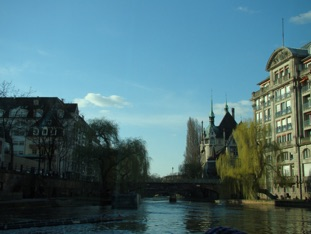
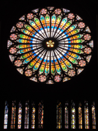
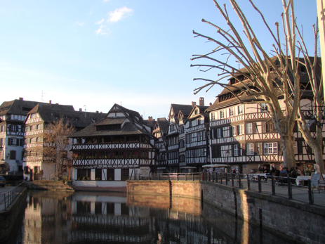

Bonjour, ca va?!... not bad heh?

Rock on WMW
So I'm back in Heidelberg after all the traveling as you all know. I was really looking forward to all the traveling was over. Not so much because I was tired of traveling - it is always great to get some new experiences and see some new places - but more because I knew that when I got home from Prague Mette would arrive from Denmark the next day. And since I hadn't seen her since christmas I was really starting to miss her and awful lot. Well after more than 2 months of absence they day finally came where we were 'reunited' - that sounded tacky... but that's sort of how I felt. She stayed here for a week, and this time we didn't have to paint the apartment and spend a day in IKEA, this time we just had the time for ourselves which was great. Of course I still hat my job to take care of but this sort of worked out with a couple of days where I worked from home.
In order not only to be 'stuck' in Heidelberg we decided to buy some train tickets to Strasbourg. Neither of us had been in France so now that I'm almost living on the boarder we might as well take advantage of it.
So friday we packed a couple of sandwiches and left Heidelberg for a romantic day in Strasbourg, Alsace :) Since we bought what is called the Baden-Württemberg-ticket which is really cheap we had to change train 2 times both going there and back. We therefore spend a couple of hours (maybe three) getting there, compared to 1.5 hours with the normal tickets, but considering that the price is ~1/3 of the usual tickets we had no problem with the extra train rides.
When we came to Strasbourg the sky was blue and the day was young. We spend most of the day walking around in the centre doing a bit of shopping and enjoying the beautiful architecture. Even though a got a good portion of spectacular architecture in Prague the week before, the Strasbourg cathedral was still breathtaking - it is incredible!!

After having seen we went for a boat ride on the canals which we had been recommended to do by various people. And yes it is really a good way to see Strasbourg and all the cool buildings.
When the evening came we were kind of hungry and wanted to go for a restaurant before we had to take the train(s) back to Heidelberg at around 8pm. But what we didn't calculate with was that the french cuisine is not following the scandinavian dinner times so at 6-7pm none of the kitchens were really open! And on top of that we managed not to find that many restaurants so we ended up in a french cafe where we had a couple of a cheese baguette and some apple pie. This however had the VERY BAD consequence that I was (semi) hungry when we had half an hour in between two trains in Karlsruhe so we ended up at McD - sorry stomach I promise not to do it for a long time :´(

Saturday morning we spend most of the day at Hauptstrasse shopping, enjoying the nice weather and a early italian dinner. Unfortunately Mette left Heidelberg last sunday... but at some point we might get use to it - I hope... or do I... I don't know.
Last week I was attending an intensive one week course on galaxies so most of the week went with trying to absorb as much information about galaxies as possible, and I think I actually managed to absorb quite a lot - let's hope it stays in there ;)
And then I'm proud of myself. Saturday I (finally) was out jogging again after 2-3 months of (semi-)voluntary running-pause because of traveling and work - damn my legs were sore yesterday - but as they say is has to hurt before it's good... or something like that.
Oh and by the way - then I went to a concert with Who Made Who last sunday. They played at Karlstor bahnhof which is a concert place here in Heidelberg. They god damn rock, but they have done that every time I have seen them so I was not surprised - just happy that they gave me what I expected! And the warm up act was great as well. They are called Errors and are from Glasgow I think and if you are into ambient-semi-drum-and-bass you should for sure check them out.
Hmm I think that was all for this time. ROCK ON!
See yah...
Monday, 30 March 2009
